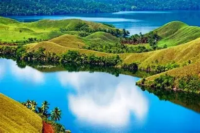

GALERI WISATA INDONESIA
Keindahan Alam dan Budaya Nusantara
MENU
HomeGaleri
Kontak
🖼 GALERI WISATA
Berikut beberapa destinasi wisata terindah di Indonesia:
| Gambar | Nama Tempat | Deskripsi |
|---|---|---|
 |
Gunung Rinjani | Gunung berapi tertinggi kedua di Indonesia yang berada di Pulau Lombok, Nusa Tenggara Barat. Pemandangannya menakjubkan dengan Danau Segara Anak di puncaknya yang menjadi daya tarik utama para pendaki. |
 |
Pantai Lombok | Pantai-pantai di Lombok seperti Tanjung Aan memiliki pasir putih lembut dan air laut yang jernih. Cocok untuk bersantai, snorkeling, atau menikmati keindahan alam tropis yang masih alami. |
 |
Pantai Bali | Bali terkenal di seluruh dunia dengan keindahan pantai-pantainya seperti Kuta dan Sanur. Tempat ini juga menawarkan kekayaan budaya, kuliner, serta pertunjukan seni tradisional. |
|  | Danau Sentani | Danau terbesar di Papua yang dikelilingi pegunungan Cycloop. Dikenal dengan keindahan alamnya serta tradisi unik masyarakat lokal yang tinggal di sekitar danau. |